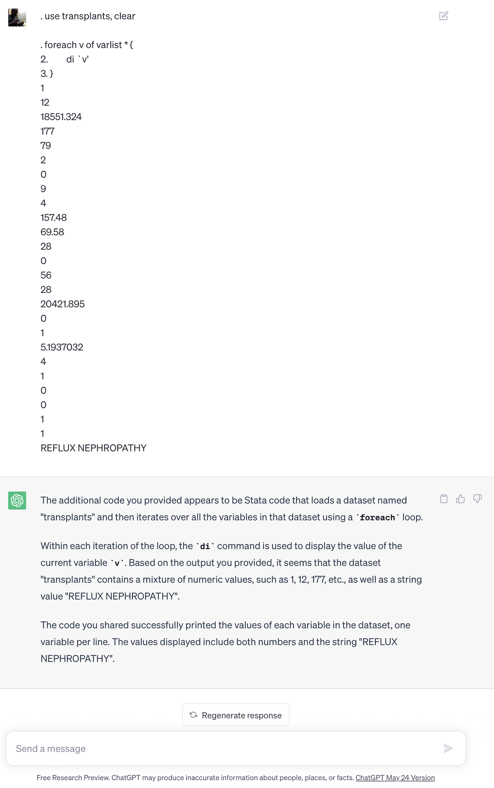
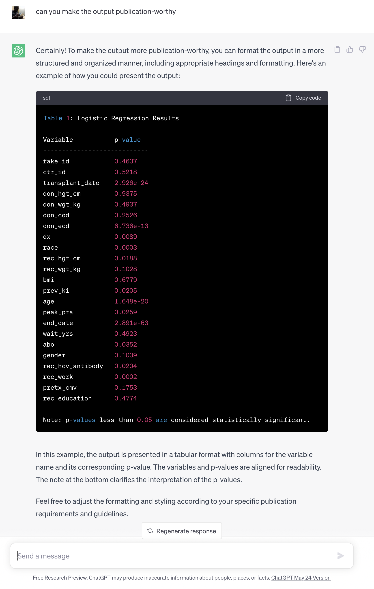

3. Loops and program syntax#
Show code cell source
import networkx as nx
import matplotlib.pyplot as plt
#import numpy as np
#import sklearn as skl
#
#plt.figure(figsize=[2, 2])
G = nx.DiGraph()
G.add_node("user", pos = (550,500) )
G.add_node("system", pos = (-550,500) )
G.add_node("program", pos = (-2000, 960) )
G.add_node("syntax", pos = (2000, 950) )
G.add_node("ado", pos = (-3000, 550) )
G.add_node("do", pos = (3000, 550) )
G.add_node("command", pos = (-1900, 150) )
G.add_node("queue", pos = (1900, 150) )
G.add_node("results", pos = (0,0))
G.add_node("dta", pos = (0, -475))
G.add_node("log", pos = (-1900, -475))
G.add_node("excel", pos = (-4000, -475))
G.add_node("word", pos = (1900, -475))
G.add_node("html", pos = (4000, -475))
G.add_node("publish", pos = (0, -950))
G.add_edges_from([ ("program","ado"), ("syntax", "do")])
G.add_edges_from([("ado", "command"), ("do", "queue") ])
G.add_edges_from([("command", "results"), ("queue", "results"),("results","excel"),("results","word"),("results","html")])
G.add_edges_from([("results","dta"),("results","log")])
G.add_edges_from([("dta","publish"),("log","publish"),("excel","publish"),("word","publish"),("html","publish")])
nx.draw(G,
nx.get_node_attributes(G, 'pos'),
with_labels=True,
font_weight='bold',
node_size = 4500,
node_color = "lightblue",
linewidths = 3)
ax= plt.gca()
ax.collections[0].set_edgecolor("#000000")
ax.set_xlim([-5000, 5000])
ax.set_ylim([-1000, 1000])
plt.show()
By now you should be aware that our key ambitions are to:
Learn the commands and syntax that generate output, typically for statistical inference
Identify the names of the
c(),r(), ore()class system-defined macros that define key parameters in our outputFormat these values to fit aesthetic, publication, or editorial criteria and save them as user-defined macros
Embed the macros into text, graph, or file (.xlsx, .log, .dta, .docx, .html)
Achieve these aims in a workflow that is automated, collaborative, open, reproducible, legible, user-friendly, and therefore rigorous
Today we are going to focus on commands and syntax that exponentially increase our efficiency in coding, a key step towards automation. One way to achieve this is by learning about loops. The other is by writing flexible programs that are driven by user-defined inputs.
3.1 Loop#
3.1.1 Over numeric values#
Take this code snippet for instance
forvalues i = 1/26 {
di `i'
}
``
```stata
. forvalues i = 1/26 {
2. di `i'
3. }
1
2
3
4
5
6
7
8
9
10
11
12
13
14
15
16
17
18
19
20
21
22
23
24
25
26
.
``

And take this one:
```stata
use transplants, clear
foreach v of varlist * {
di `v'
}
. use transplants, clear
. foreach v of varlist * {
2. di `v'
3. }
1
12
18551.324
177
79
2
0
9
4
157.48
69.58
28
0
56
28
20421.895
0
1
5.1937032
4
1
0
0
1
1
REFLUX NEPHROPATHY
.

3.1.2 Over string values#
Let’s make a subtle modification to the code snippet above:
use transplants, clear
foreach v of varlist * {
di "`v'"
}
. use transplants, clear
. foreach v of varlist * {
2. di "`v'"
3. }
fake_id
ctr_id
transplant_date
don_hgt_cm
don_wgt_kg
don_cod
don_ecd
dx
race
rec_hgt_cm
rec_wgt_kg
bmi
prev_ki
age
peak_pra
end_date
died
tx_failed
wait_yrs
abo
gender
rec_hcv_antibody
rec_work
pretx_cmv
rec_education
extended_dgn
.
The code you provided loads a dataset named “transplants” and then iterates over all the variables in that dataset using a foreach loop.
Within each iteration of the loop, the di command is used to display the name of the current variable v.
Based on the output you provided, it seems that the dataset “transplants” contains a list of variable names. The code successfully printed the names of each variable in the dataset, with one variable name displayed per line. The variable names include “fake_id”, “ctr_id”, “transplant_date”, “don_hgt_cm”, “don_wgt_kg”, and so on.
The code snippet you provided successfully displays the names of the variables in the dataset “transplants”.
– chatGPT
What is the output:code ratio in these two examples I’ve given? Might that be a crude metric of efficiency?
Consider the following code snippet:
use transplants, clear
foreach v of varlist * {
if "`v'" != "died" | "`v'" !="extended_dgn" {
capture logistic died `v'
capture lincom `v'
scalar p = r(p)
di "p-value for `v' : " p
}
else {
di " "
}
}
. use transplants, clear
. foreach v of varlist * {
2. if "`v'" != "died" "`v'" !="extended_dgn" {
3. capture logistic died `v'
4. capture lincom `v'
5. scalar p = r(p)
6. di "p-value for `v' : " p
7. }
8. else {
9. di " "
10. }
11.
.
. }
p-value for fake_id : .46371117
p-value for ctr_id : .52178434
p-value for transplant_date : 2.926e-24
p-value for don_hgt_cm : .93751316
p-value for don_wgt_kg : .49371195
p-value for don_cod : .25255576
p-value for don_ecd : 6.736e-13
p-value for dx : .00894634
p-value for race : .00028468
p-value for rec_hgt_cm : .01878141
p-value for rec_wgt_kg : .10279242
p-value for bmi : .67785746
p-value for prev_ki : .02051579
p-value for age : 1.648e-20
p-value for peak_pra : .02585959
p-value for end_date : 2.891e-63
p-value for died : .
p-value for tx_failed : .
p-value for wait_yrs : .49225994
p-value for abo : .03522145
p-value for gender : .10388923
p-value for rec_hcv_antibody : .02039008
p-value for rec_work : .00018548
p-value for pretx_cmv : .17525206
p-value for rec_education : .47738727
p-value for extended_dgn : .


local decimal_format "%.2f"
foreach v of varlist * {
if "`v'" != "died" & "`v'" != "extended_dgn" {
capture logistic died `v'
capture lincom `v'
scalar p = r(p)
local p_value_label ""
if p < 0.01 {
local p_value_label "p<0.01"
}
else if p <= 0.05 {
local p_value_label string(round(p, 0.01))
}
else {
local p_value_label string(round(p, 0.1))
}
di "`v' : " `p_value_label'
}
else {
di " "
}
}
. local decimal_format "%.2f"
.
. foreach v of varlist * {
2. if "`v'" != "died" & "`v'" != "extended_dgn" {
3. capture logistic died `v'
4. capture lincom `v'
5. scalar p = r(p)
6.
. local p_value_label ""
7.
. if p < 0.01 {
8. local p_value_label "p<0.01"
9. }
10. else if p <= 0.05 {
11. local p_value_label string(round(p, 0.01))
12. }
13. else {
14. local p_value_label string(round(p, 0.1))
15. }
16.
. di "`v' : " `p_value_label'
17. }
18. else {
19. di " "
20. }
21. }
fake_id : .5
ctr_id : .5
transplant_date : 1
don_hgt_cm : .9
don_wgt_kg : .5
don_cod : .3
don_ecd : 1
dx : 1
race : 1
rec_hgt_cm : .02
rec_wgt_kg : .1
bmi : .7
prev_ki : .02
age : 1
peak_pra : .03
end_date : 1
tx_failed : .
wait_yrs : .5
abo : .04
gender : .1
rec_hcv_antibody : .02
rec_work : 1
pretx_cmv : .2
rec_education : .5